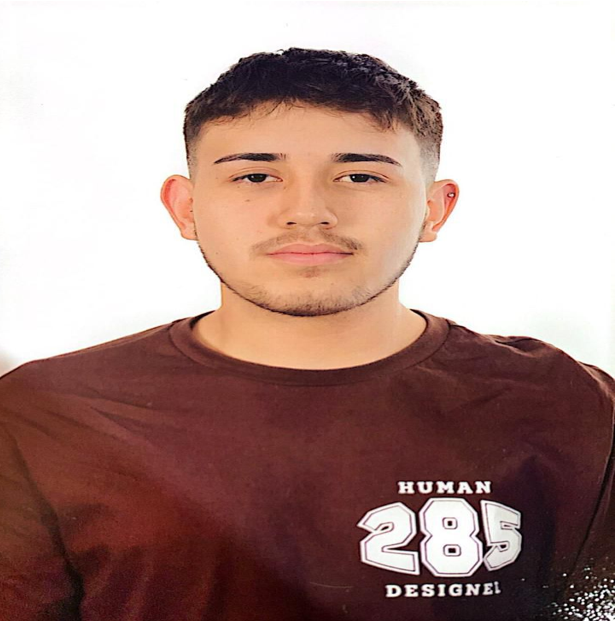

HOJA DE VIDA
Perfil
Experiencia en atención y servicio al cliente con una trayectoria de 2 años. Reconocido por excelencia académica, responsabilidad y puntualidad. Actitud proactiva y comunicativa en el trabajo en equipo. Destacado por liderazgo, honestidad y compromiso con los deberes asignados. Interesado en adquirir nuevas experiencias y en crecimiento personal.
Datos Personales
- Edad: 19 años
- Documento de Identidad: 1034349176
- Teléfono: 321 304 4565
- Correo: lualejocyuz@gmail.com
- Dirección: Calle 8a # 78c 53 - Castilla
Habilidades
- Capacidad de adaptación
- Flexibilidad
- Creatividad
- Dedicación
- Capacidad comunicativa
- Organización
- Liderazgo
- Honestidad
- Confianza
- Puntualidad
- Disciplina
- Tolerancia
- Colaboración
- Escucha activa
Educación
- Gimnasio Moderno Castilla - Bachillerato Académico (2017 – 2018)
- Instituto Técnico Industrial Centro Don Bosco - Bachillerato Académico (2019 – 2020)
- Instituto Técnico Fidel Cano - Bachillerato Académico (2021 – 2022)
(Personero Estudiantil 2022)
Cursos
- Centro Colombo Americano - Curso de Inglés (Nivel B2) (2012 – 2023)
- Instituto Técnico Fidel Cano - Técnico en Procesamiento de Alimentos (SENA) (2021 – 2022)